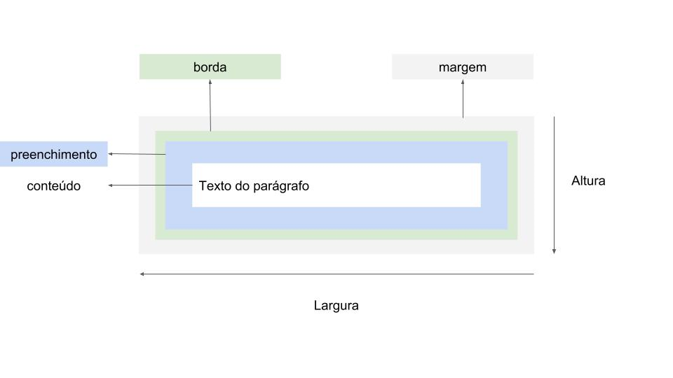

Box Model
O que é Box Model ?
Em css, o termo "Box model" é utilizado quando falamos sobre design
e layout.
É um conceito fundamental de Css que define como os elementos HTML
são renderizados e ocupam espaço na página. Cada elemento é considerado
uma "caixa" que envolve o conteúdo e pode ter margens, bordas e preenchimento.
O modelo de caixa consiste em quatro componentes principais:
-
Conteúdo(Content):
É o próprio conteúdo do elemento, como texto, imagem ou outros
elementos html.
-
Preenchimento(Padding):
É uma área transparente ao redor do conteúdo dentro
da caixa. O preenchimento separa o conteúdo das bordas
do elemento.
-
Bordas(Border):
São linhas que circundam o preenchimento. As bordas podem
ser personalizadas em termos de espessura, estilo e cor.
-
Margens(margin):
São áreas transparentes que ficam fora da borda. As margens
especificam o espaço entre um elemento e os elementos vizinhos
Ilustração exemplo:

Esses componentes do Box Model podem ser ajustados e controlados usando as
propriedades CSS apropriadas. Por exemplo:
-
A propriedade padding define o preenchimento interno do elemento.
- A propriedade Border especifica as características da borda do elemento
- A propriedade Margin define as regras do elemento, controlando o espaçamento externo
Ao Manipular essas propriedades do Box Model, é possível controlar o layout e o espaçamento
dos elementos na paǵina, permitindo a criação de designs personalizados e responsivos.
Width e Height
As propriedades width e height permitem controlar
a altura e largura, como os nomes sugerem, da área de conteúdo de
um elemento.
exemplo:
div {
height:16px
width:16px
display: in-line
}
Algumas vezes pode ser necessário ter um maior controle das dimensões de um elemento,
especificando o quanto ela vai crescer ou encolher na página. Fazemos isso com
as propriedades min-width, max-width e max-height
exemplo:
div {
width:16px
min-width: 80px
}
A forma como o valor dessas propriedades afetam o elemento depende
do valor da propriedade box-sizing. Essa propriedade define
como a altura e largura de um elemento são calculadas.
O valor padrão do box-sizing é o content-box, que define
que a largura e altura de um elemento serão definidas pelos valores atribuídos
para as propriedades height e width:
exemplo:
div {
heigth:16px;
width:20px;
padding:16px;
box-sizing: content-box;
}
No caso acima, as dimensões finais do elemento serão 48 pixels de altura (height de 16px + padding de 2 * 16px
= 32px) e 52 pixels de largura (width de 20px + padding de 2 * 16px = 32px) pois os valores das propriedades
(height e padding) e (width e padding) serão somados quando o motor de renderização do navegador os
apresentar.
O segundo valor possível para essa propriedade é o border-box, que
define que a altura e largura de um elemento deve levar em consideração também a sua
borda e preenchimento.
div {
heigth:16px;
width:20px;
padding:16px;
box-sizing: border-box
}
Neste caso, uma vez que definimos o padding do elemento como 16 pixels, a altura final
do elemento será de 32 pixels, considerando que este valor corresponde a área de preenchimento superior e
inferior (16 + 16). Sendo a altura, height, de 16 pixels, ela será considerada dentro dos 32 pixels já
calculados a partir da área de preencimento. Isso acontece pois no box-sizing o elemento tende a se encolher
para se ajustar ao espaço correspondente às dimensões. Uma vez que a altura, height, do elemento supere os 32
pixels definidos pelo padding, por exemplo ao receber 33 pixels, a area do conteúdo do elemento passará
a ter 1 pixel e a altura final do elemento passará a ser um pixel maior (33 - 32 = 1). O mesmo se aplica a
largura, width.
Shorthand
shorthand é uma forma concisa de escrever propriedades CSS em umá única linha,
agrupando-as e fornecendo valores em uma ordem específica. Isso torna o código mais legível e eficiente.
Você pode usar a seguinte sintaxe:
-
padding: valor para aplicar o mesmo valor em todos os lados
-
padding: valor1 valor2 para aplicar valores diferentes nos lados "top"/"bottom" e
"right"/left".
-
padding: valor1 valor2 valor3 para aplicar valores diferentes nos lados "top", "right"/left" e
"bottom".
-
padding: valor1 valor2 valor3 valor4 para aplicar valores diferentes em todos os lados, na ordem
superior, direito, inferior e esquerdo.